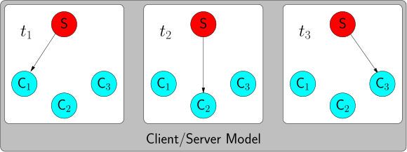
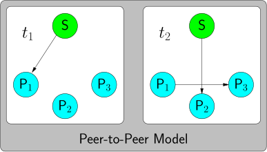

A unicast transmission sends data from a single sender to a single receiver.
A multicast transmission sends data from a single server to more than one
receiver.
2 Anycast
A anycast transmission sends data from a single sender to a single receiver,
but like in multicast, the receiver is not controlled by the sender.
3 Client/server (CS) vs peer-to-peers (P2P models
In a CS model, the data is sent by a server (or a cluster of servers such
as in a CDN (content Delivery Network)) and received directly by one or
more clients.

As in the CS model, in a P2P model, the data is sent by one or more server,
but the rereivers (peers) are able to relay the data in order to reduce the
bandwidth comsumption at the server side.

The P2P model is also called
ALM (Application Multicast Model).